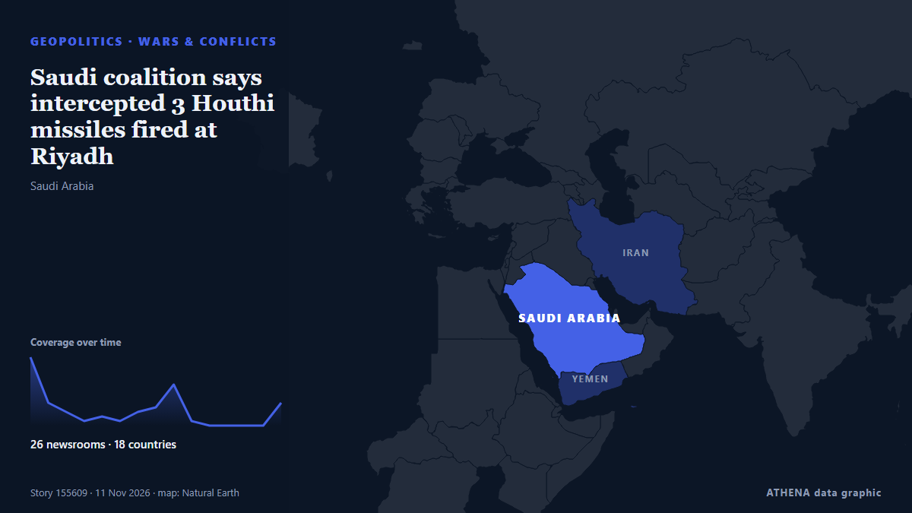

Saudi coalition says intercepted 3 Houthi missiles fired at Riyadh

Saudi-led coalition claims Houthi missile destroyed over Eastern Province The Saudi-led coalition air defences intercepted and destroyed a ballistic missile launched by the Houthis toward the… από Middle East Eye
Αναφέρθηκε ανεξάρτητα από 28 μέσα σε 20 χώρες από τις 8 Νοε, πρώτο το Middle East Eye· η κάλυψη εξασθενεί. Το ATHENA εκτιμά τον κίνδυνο αυξημένο (4.5/10), κυρίως λόγω της σοβαρότητάς του και της εμβέλειάς του. Βεβαιότητα 89% (υψηλή): το επιβεβαιώνουν 28 ανεξάρτητα μέσα, μέση αξιοπιστία 78%. Μέσα ανά χώρα: Σαουδική Αραβία (5), Τουρκία (5), Πακιστάν (3). Κάλυψη: 8 Νοε έως 10 Νοε, 54 ώρες.
Γιατί έχει σημασία: Η Ερυθρά Θάλασσα και τα στενά Μπαμπ ελ-Μαντέμπ είναι η συντομότερη θαλάσσια οδός Ασίας–Ευρώπης, μέσω της Διώρυγας του Σουέζ. Οι επιθέσεις σε εμπορικά πλοία αναγκάζουν τις εταιρείες να παρακάμπτουν την Αφρική, με κόστος χρόνου και χρημάτων για το παγκόσμιο εμπόριο και τη ναυτιλία.
Τι άλλαξε: 8 νέες αναφορές από 6 μέσα στο 24ωρο έως 11 Νοε.
Πρώτη διατύπωση: Saudi authorities say danger passes in Dammam, al-Ahsa and Abqaiq
Οι τίτλοι των ειδήσεων παρουσιάζονται στα αγγλικά, όπως δημοσιεύτηκαν.
Πώς να διαβάσετε αυτή τη σελίδα
- Τι διαβάζετε
- 28 μέσα σε 20 χώρες ανέφεραν αυτό το γεγονός. Οι αναφορές παρακάτω εμφανίζονται με τη σειρά που δημοσιεύτηκαν· κάθε τίτλος ανοίγει το αρχικό άρθρο. Το ATHENA δεν γράφει δικά του ρεπορτάζ.
- Η εκτίμησή μας
- Υπό παρακολούθηση — Οι αναφορές περιγράφουν ενέργεια ή απόφαση που δεν έχει ακόμη ληφθεί, ανάμεσα σε κράτη ή ένοπλες ομάδες. Το ATHENA παρακολουθεί τι θα συμβεί στη συνέχεια. Αναζητούμε τέσσερα είδη εξέλιξης: καμία περαιτέρω ενέργεια, μια ανοιχτή ενέργεια που κάποιος αναλαμβάνει, μια ενέργεια μέσω τρίτων ή χωρίς ανάληψη ευθύνης, και ένα ατύχημα ή μια παρεξήγηση. Δεν προβλέπουμε ποιο θα συμβεί.
- Πόσα στοιχεία υπάρχουν
- Επαρκής Αρκετά ανεξάρτητα μέσα συμφωνούν, αλλά η εικόνα μπορεί ακόμη να αλλάξει.
Αφού αφαιρεθούν οι επαναλήψεις, τα άσχετα και τα παλιά στοιχεία, υπολογίζονται 22 από τις 39 αναφορές που παρατίθενται· το 100% των τίτλων αντιστοιχεί στο γεγονός.
- Τι δεν σημαίνει
- Το ATHENA μετρά πώς καλύπτεται ένα γεγονός, όχι αν είναι αληθές. Δεν είναι πρόβλεψη, κρίση για το ποιος έχει δίκιο ή συμβουλή.
- Τι θα την άλλαζε
- Αναφορές από άλλα ανεξάρτητα μέσα που δείχνουν διαφορετική εξέλιξη, ή σαφής επιβεβαίωση ή διάψευση από επίσημη πηγή.
Εκτίμηση R2 · ανανεώνεται με κάθε ενημέρωση της σελίδας. Το ATHENA δεν έχει δημοσιεύσει ακόμη ιστορικό επιδόσεων για αυτές τις εκτιμήσεις· όταν το κάνει, θα συνδέεται εδώ.
Με μια ματιά
Επιλέγεται, βαθμολογείται και γράφεται από τη δημοσιευμένη μεθοδολογία του ATHENA. Κανένας συντάκτης δεν παρεμβαίνει σε μεμονωμένα γεγονότα. Πώς παράγεται ›
| 08 Nov 02:09 UTC | 15 |
|---|---|
| 08 Nov 08:09 UTC | 5 |
| 08 Nov 14:09 UTC | 3 |
| 08 Nov 20:09 UTC | 1 |
| 09 Nov 02:09 UTC | 2 |
| 09 Nov 08:09 UTC | 1 |
| 09 Nov 14:09 UTC | 3 |
| 09 Nov 20:09 UTC | 4 |
| 10 Nov 02:09 UTC | 9 |
| 10 Nov 08:09 UTC | 1 |
| 10 Nov 14:09 UTC | 0 |
| 10 Nov 20:09 UTC | 0 |
| 11 Nov 02:09 UTC | 0 |
| 11 Nov 08:09 UTC | 0 |
| 11 Nov 14:09 UTC | 8 |
| 08 Nov 02:30 UTC | 2.9 |
|---|---|
| 08 Nov 03:27 UTC | 2.2 |
| 08 Nov 09:20 UTC | 3.3 |
| 08 Nov 16:01 UTC | 1.8 |
| 10 Nov 05:16 UTC | 2.9 |
| 11 Nov 19:44 UTC | 4.2 |
| 11 Nov 19:52 UTC | 4.5 |
Γιατί αυτοί οι αριθμοί
Σημασία
Κίνδυνος
Βεβαιότητα
Η κάλυψη — ποιος το ανέφερε και πότε
ο τίτλος όπως δημοσιεύτηκε · ανοίγει το πρωτότυπο- Middle East Eye · INTSaudi authorities say danger passes in Dammam, al-Ahsa and Abqaiq
- Middle East Eye · INTSaudi-led coalition claims Houthi missile destroyed over Eastern Province
- Arab News · Σαουδική ΑραβίαSaudi defenses intercept Houthi missiles, drone targeting Riyadh and southern regions
- Anadolu Agency (English) · ΤουρκίαSaudi Arabia says it intercepted ballistic missile fired toward eastern region
- Asharq Al-Awsat (English) · Σαουδική ΑραβίαEnergy Ministry: Minor Damage in Attempted Attack on Saudi Aramco Building in Riyadh
- New Straits Times · ΜαλαισίαSaudi Arabia says it intercepted ballistic missile fired toward eastern region
- Anadolu Agency (English) · ΤουρκίαSaudi-led coalition says it intercepted drone, 4 missiles over Riyadh, southern regions
- The Straits Times · ΣιγκαπούρηHouthi attack damages Aramco building in Riyadh's financial district
- Arab Times · ΚουβέιτSaudi-Led Coalition Says It Intercepts Two Iran-Backed Houthi Ballistic Missiles Over Riyadh
- TASS (English) · ΡωσίαSaudi Arabia reports destruction of two missiles near Riyadh — Reuters
- Free Malaysia Today · ΜαλαισίαSaudi-led coalition intercepts 2 Houthi missiles fired towards Riyadh
- Al Jazeera English · ΚατάρSaudi Aramco building in Riyadh damaged in ‘attempted’ attack
- The National · Ηνωμένα Αραβικά ΕμιράταAramco building in Riyadh damaged in attempted attack, ministry says
- Türkiye Today · ΤουρκίαSaudi-led coalition intercepts Houthi missiles targeting Riyadh
- Khaama Press · ΑφγανιστάνSaudi Arabia Says It Intercepted Houthi Ballistic Missile Targeting Eastern Province
- Arab News · Σαουδική ΑραβίαAramco building in Riyadh targeted, Saudi energy ministry says
- Business Recorder · ΠακιστάνSaudi-led coalition intercepts two Houthi missiles fired towards Riyadh
- SANA (English) · ΣυρίαCoalition reports intercepting Houthi missiles and drone targeting Saudi Arabia
- TASS (English) · ΡωσίαSaudi-led coalition hits Houthi missile launchers used to attack Riyadh
- Middle East Eye · INTSaudi-led coalition says it destroyed Houthi missile launchpads in Yemen's Sanaa
- The Jerusalem Post · ΙσραήλSaudi-led coalition says it destroyed Houthi ballistic missile launch platform in Sanaa
- The Daily Star — page reader · ΜπανγκλαντέςKSA downs two Houthi missiles aimed at Riyadh
- CGTN (World) · ΚίναSaudi-led coalition intercepts two Houthi missiles targeting Riyadh
- Arab News · Σαουδική ΑραβίαSaudi Civil Defense lifts danger warning in Riyadh
- France 24 English · ΓαλλίαSaudi Arabia intercepts Houthi missiles as Riyadh's Aramco building damaged
- Middle East Eye · INTSaudi-led coalition says it destroyed Houthi missile facilities
- Arab News · Σαουδική ΑραβίαHouthi missiles, drone intercepted as coalition says it destroyed militia’s ballistic missile factories
- APA (English) · ΑζερμπαϊτζάνSaudi Arabia destroys Houthi ballistic missile production facilities
- Middle East Eye · INTSaudi-led coalition says it intercepted Houthi missile
- Middle East Eye · INTTwo Houthi missiles launched towards Riyadh destroyed, Saudi-led coalition says
- Express Tribune · ΠακιστάνSaudi-led coalition reports Houthi missile, drone interceptions; Saba reports Saudi strikes on Sanaa
- The Straits Times · ΣιγκαπούρηSaudi-led coalition reports Houthi missile, drone interceptions; Saba reports Saudi strikes on Sanaa
- Anadolu Agency (English) · ΤουρκίαSaudi-led coalition says it intercepted 3 Houthi missiles targeting Saudi Arabia
- Greek City Times · ΕλλάδαSaudi Arabia Intercepts Three Houthi Missiles as Greece Backs Red Sea Security
- Business Recorder · ΠακιστάνSaudi-led coalition says it intercepts two Houthi missiles fired towards Riyadh
- TRT World · ΤουρκίαHouthi militia target Saudi Arabia with three missiles, two aimed at capital, coalition says
- Middle East Eye · INTSaudi-led coalition intercepts drone over Eastern Province
- Prothom Alo (English) · ΜπανγκλαντέςExplosions heard in Saudi Arabia capital Riyadh
- Al-Monitor · Ηνωμένες ΠολιτείεςSaudi-led coalition reports Houthi missile, drone interceptions; Saba reports Saudi strikes on Sanaa